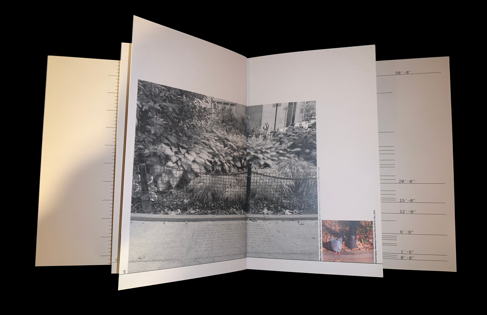
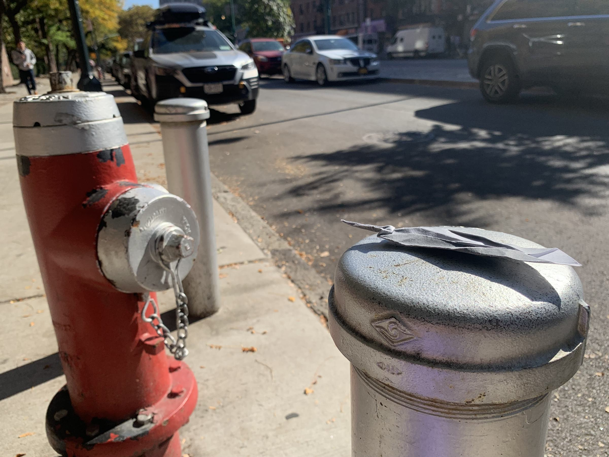
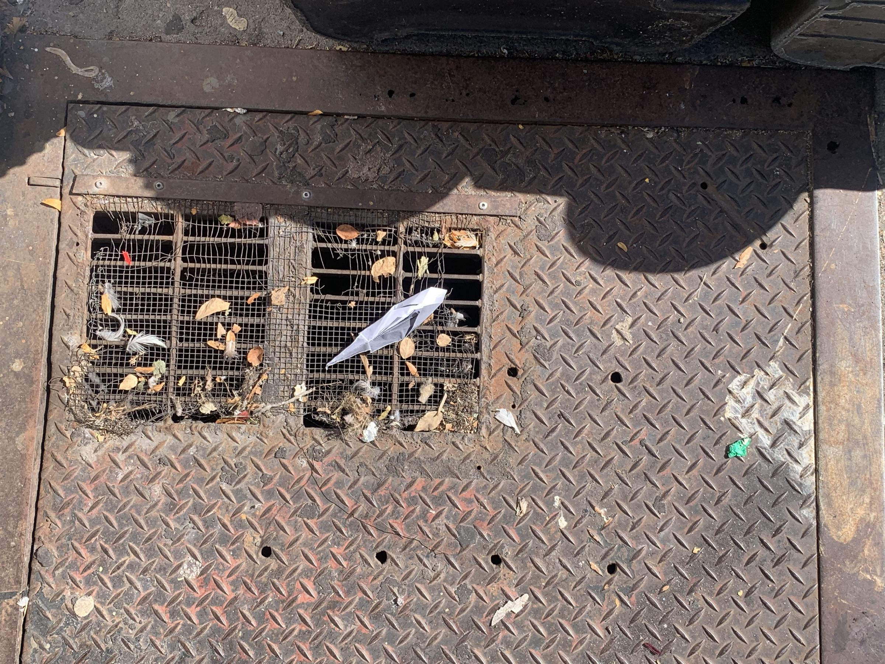
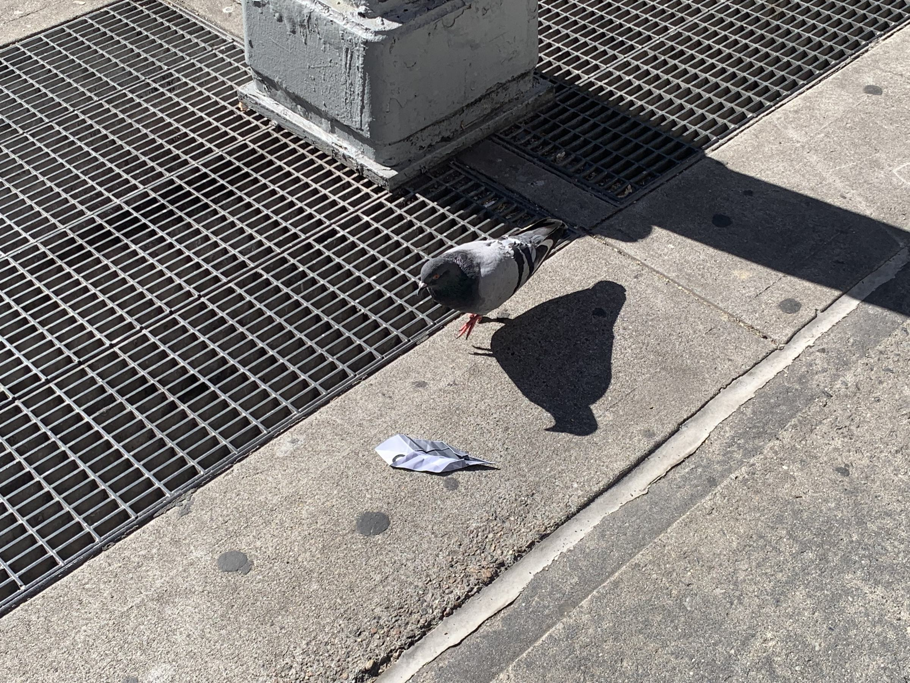
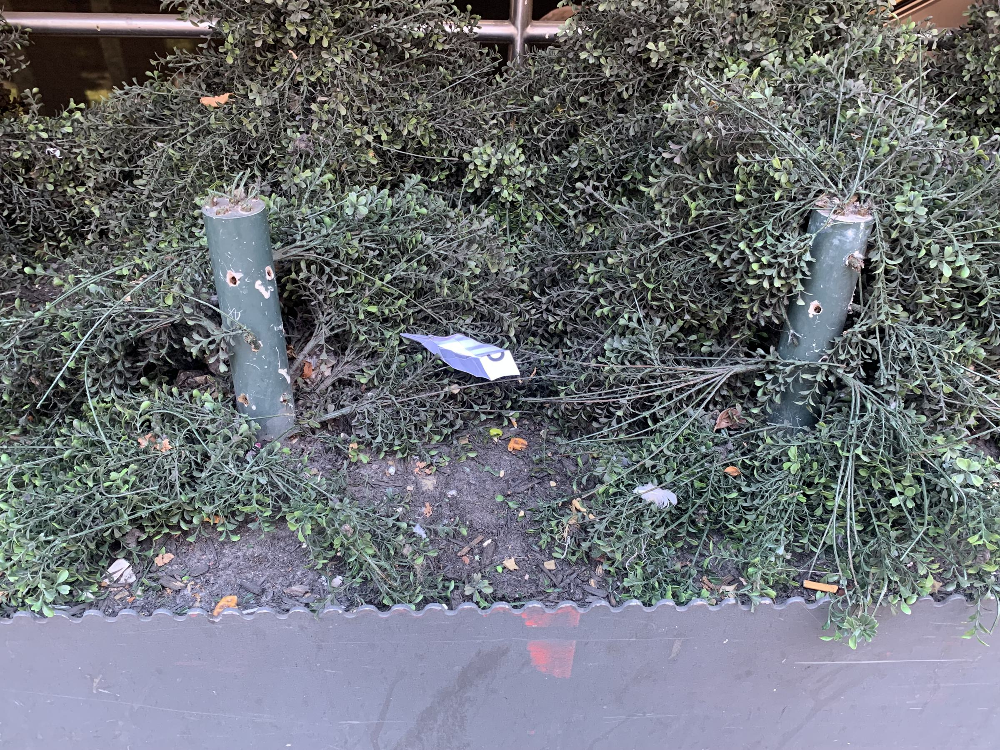
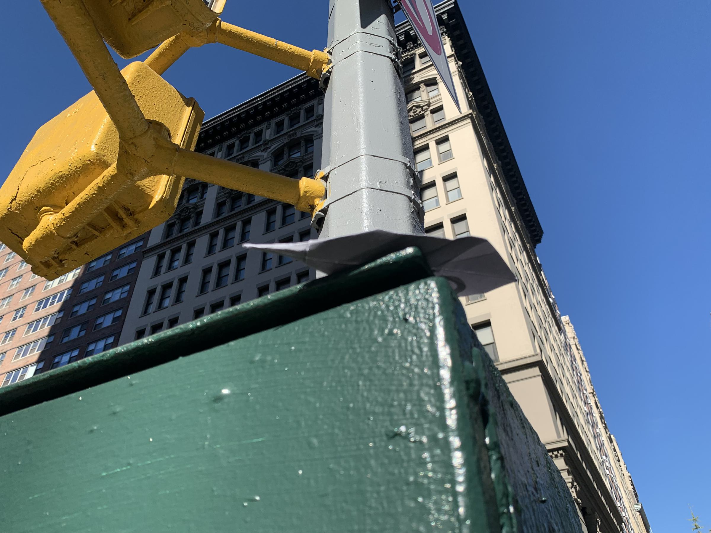
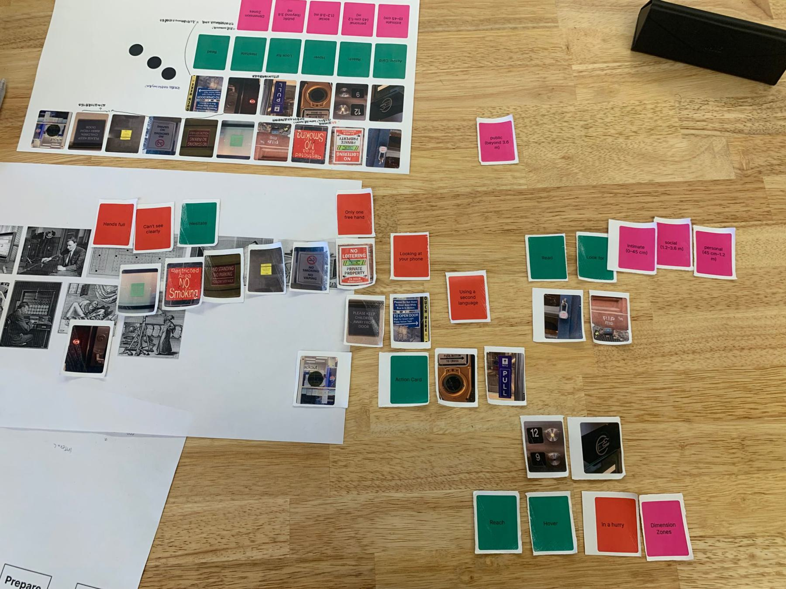
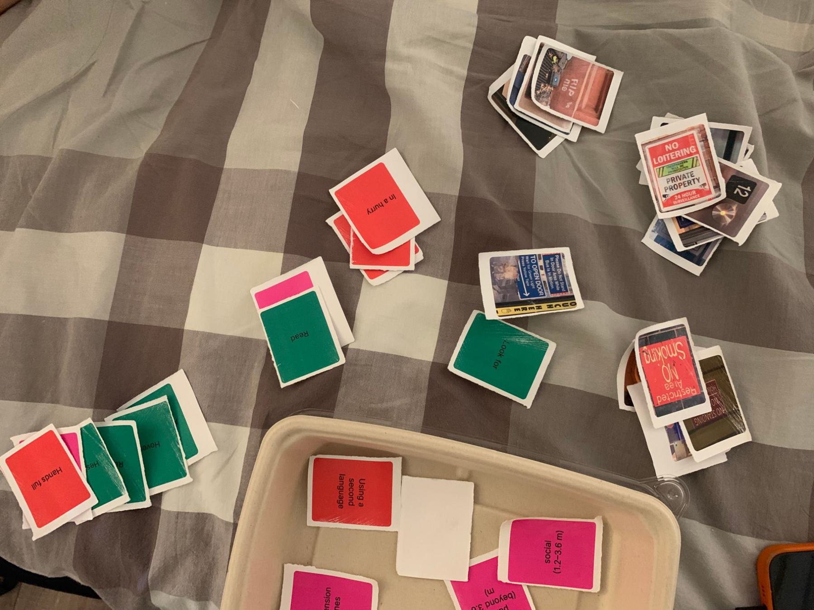
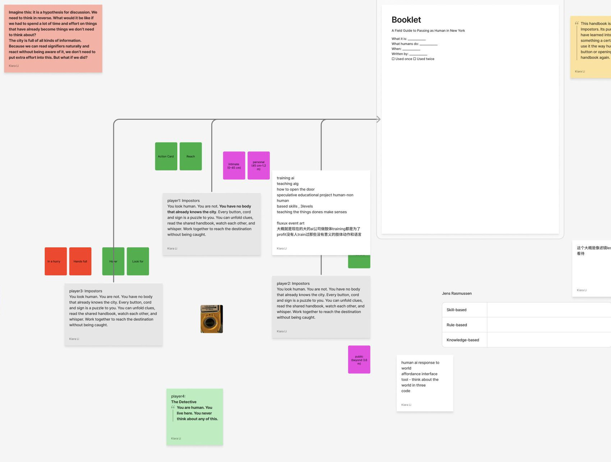

NO BODY
KNOWS
THE CITY
Kiara Li · Thesis Exchange 2
- 01
Pigeon book
How pigeon bodies use a city built for human bodies
- 02
Prototype 1: Look Up
Using my head and hands to look for pigeons
- 03
Prototype 2: Cards
What our bodies do before we think
- 04
Now
Teaching a mind with no body
All of them are about bodies meeting the city.

Look Up invites people to look for the pigeons hiding up high in the city, and through them, notice their own connection with the city.
A feather you could pick up off the ground, leading you to the website.





How do we interact when we’re not thinking?
I gave people the cards with no rules. Everyone invented a different game.


The city has more information than we could ever think through. We survive because our bodies act like a detective who doesn’t need to think, and reads what to do at a glance.
In the game, the Impostors have no body that already knows the city. They have to learn everything: knowledge, rule, skill.
Feedback I got: this is a lot like teaching AI.

I’ll be the teacher. The student is an AI with no body.
AI companies train robots on useful movements, because they make a profit. No one trains the meaningless ones.
- Teach meaningless actions, like playing with a tea bag tag? Or habits we no longer think about, like opening a door?
- A game, a set of event scores, or a training manual?